07_proteinPanel_TNK_analysis
SandraTietscher
2020-10-27
Last updated: 2020-11-20
Checks: 7 0
Knit directory: BCexh_IMC/
This reproducible R Markdown analysis was created with workflowr (version 1.6.2). The Checks tab describes the reproducibility checks that were applied when the results were created. The Past versions tab lists the development history.
Great! Since the R Markdown file has been committed to the Git repository, you know the exact version of the code that produced these results.
Great job! The global environment was empty. Objects defined in the global environment can affect the analysis in your R Markdown file in unknown ways. For reproduciblity it’s best to always run the code in an empty environment.
The command set.seed(12345) was run prior to running the code in the R Markdown file. Setting a seed ensures that any results that rely on randomness, e.g. subsampling or permutations, are reproducible.
Great job! Recording the operating system, R version, and package versions is critical for reproducibility.
Nice! There were no cached chunks for this analysis, so you can be confident that you successfully produced the results during this run.
Great job! Using relative paths to the files within your workflowr project makes it easier to run your code on other machines.
Great! You are using Git for version control. Tracking code development and connecting the code version to the results is critical for reproducibility.
The results in this page were generated with repository version fb03dc4. See the Past versions tab to see a history of the changes made to the R Markdown and HTML files.
Note that you need to be careful to ensure that all relevant files for the analysis have been committed to Git prior to generating the results (you can use wflow_publish or wflow_git_commit). workflowr only checks the R Markdown file, but you know if there are other scripts or data files that it depends on. Below is the status of the Git repository when the results were generated:
Ignored files:
Ignored: analysis/.Rhistory
Untracked files:
Untracked: CD11c_CD68_scatter.png
Untracked: Neighbourhood_TLS_relative.pdf
Untracked: Neighbourhood_TLS_relative.png
Untracked: Neighbourhood_all_relative.pdf
Untracked: Neighbourhood_all_relative.png
Untracked: analysis/XX_RNApanel_neighbourhood.Rmd
Untracked: cytokine_environment.png
Untracked: data/RNAseq_Tcells.rds
Untracked: data/RNAseq_epithelial.rds
Untracked: data/ROI_info_HIER.csv
Untracked: data/ROI_info_RNAscope.csv
Untracked: data/cpout/
Untracked: data/masks/
Untracked: heatmap_markerexpression_myeloid_sub.png
Untracked: neighbourhood_myeloid_TIGdifference.png
Untracked: neighbourhood_myeloid_TLS_relative.png
Untracked: neighbourhood_myeloid_all_relative.png
Untracked: neighbourhood_myeloid_split_TLS.png
Untracked: output/ProteinPanel/
Untracked: output/RNApanel/
Untracked: output/TLS_score_25samples.png
Untracked: output/sce_ProteinPanel_afterQC.rds
Untracked: output/sce_ProteinPanel_initial.rds
Untracked: output/sce_ProteinPanel_initial_TLSrevised.rds
Untracked: output/sce_RNApanel_afterQC.rds
Untracked: output/sce_RNApanel_initial.rds
Untracked: output/sce_RNApanel_initial_TLSrevised.rds
Untracked: test_Treg_enrichment.png
Note that any generated files, e.g. HTML, png, CSS, etc., are not included in this status report because it is ok for generated content to have uncommitted changes.
These are the previous versions of the repository in which changes were made to the R Markdown (analysis/07_proteinPanel_TNK_analysis.Rmd) and HTML (docs/07_proteinPanel_TNK_analysis.html) files. If you’ve configured a remote Git repository (see ?wflow_git_remote), click on the hyperlinks in the table below to view the files as they were in that past version.
| File | Version | Author | Date | Message |
|---|---|---|---|---|
| Rmd | fb03dc4 | SandraTietscher | 2020-11-20 | Small plot changes |
| html | b1f8649 | SandraTietscher | 2020-11-18 | Build site. |
| Rmd | bc67cfe | SandraTietscher | 2020-11-18 | Add Proportional Variability |
| html | 14b0a2c | SandraTietscher | 2020-11-11 | Build site. |
| Rmd | b160181 | SandraTietscher | 2020-11-11 | Minor changes |
| html | 07fbe33 | SandraTietscher | 2020-11-06 | Build site. |
| Rmd | 11f3491 | SandraTietscher | 2020-11-06 | Minor plot changes |
| html | ea57348 | SandraTietscher | 2020-11-05 | Build site. |
| Rmd | 85b24f1 | SandraTietscher | 2020-11-05 | Include CV for within-sample variation |
| html | a1d147b | SandraTietscher | 2020-11-02 | Build site. |
| Rmd | 41c22e3 | SandraTietscher | 2020-11-02 | Add within-sample variation plots for all celltypes |
| html | 30b1bc1 | SandraTietscher | 2020-11-02 | Build site. |
| Rmd | 559190f | SandraTietscher | 2020-11-02 | Update TLS information |
| html | 1f03966 | SandraTietscher | 2020-11-02 | Build site. |
| Rmd | 957c57b | SandraTietscher | 2020-11-02 | Add TIG comparison of subtype frequency |
| html | 718ff45 | SandraTietscher | 2020-10-29 | Build site. |
| Rmd | 43a37dc | SandraTietscher | 2020-10-29 | Add TLS celltype preference |
| html | 200dd71 | SandraTietscher | 2020-10-29 | Build site. |
| Rmd | 05a9ffe | SandraTietscher | 2020-10-29 | Better naming of intermediate files |
| html | 270a816 | SandraTietscher | 2020-10-29 | Build site. |
| Rmd | bbb7eb7 | SandraTietscher | 2020-10-29 | Add subtypes correctly |
| html | b76baeb | SandraTietscher | 2020-10-28 | Build site. |
| Rmd | 5e88949 | SandraTietscher | 2020-10-28 | Cell subtype update |
| html | ac03081 | SandraTietscher | 2020-10-28 | Build site. |
| Rmd | 70ab232 | SandraTietscher | 2020-10-28 | Protein Panel: add more detailed T/NK cell analysis |
Introduction
This script performs subclustering of T cells and NK cells for the Protein panel and performs further downstream analysis
Load libraries and data
# Load libraries
library(ggplot2)
library(SingleCellExperiment)
library(scater)
library(tidyverse)
library(dittoSeq)
library(viridis)
library(cowplot)
library(ggpubr)
library(scran)
library(CValternatives)
# Read SingleCellExperiment object
sce_protein <- readRDS("output/ProteinPanel/sce_ProteinPanel_celltypes.rds")
# Subset T/NK cells only
sce_TNK <- sce_protein[,which(sce_protein$celltype == "T_NK")]T/NK cell subclustering
Calculate UMAP on all TNK cells
Use only relevant markers. Exclude LAG-3 (did not work well).
markers_include_umap <- c("CD38", "CD27", "CD7", "CD45RA", "CD3", "PD1", "Tim-3", "Granzyme_B", "TCF7", "CD45RO", "FOXP3", "ICOS", "CD8a", "GITR", "CD4")
sce_TNK <- runUMAP(sce_TNK, exprs_values = "exprs", subset_row = markers_include_umap)
#sce_TNK <- runUMAP(sce_TNK, dimred = "corrected", name = "UMAP_mnnCorrected", subset_row = markers_include_umap)Visualize features on UMAP
dittoDimPlot(sce_TNK, var = "sample", reduction.use = "UMAP", size = 0.5,
color.panel = metadata(sce_TNK)$colour_vectors$sample, opacity = 0.5)
dittoDimPlot(sce_TNK, var = "sample", reduction.use = "UMAP", size = 0.5,
color.panel = metadata(sce_TNK)$colour_vectors$sample, split.by = "sample", opacity = 0.5) 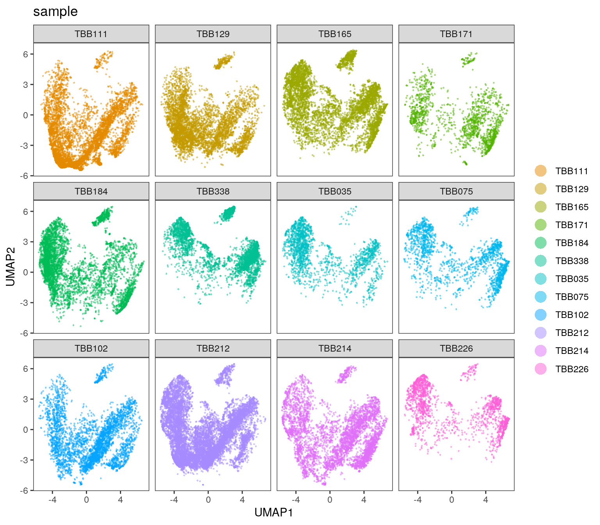
dittoDimPlot(sce_TNK, var = "TIG", reduction.use = "UMAP", size = 0.5,
color.panel = metadata(sce_TNK)$colour_vectors$TIG)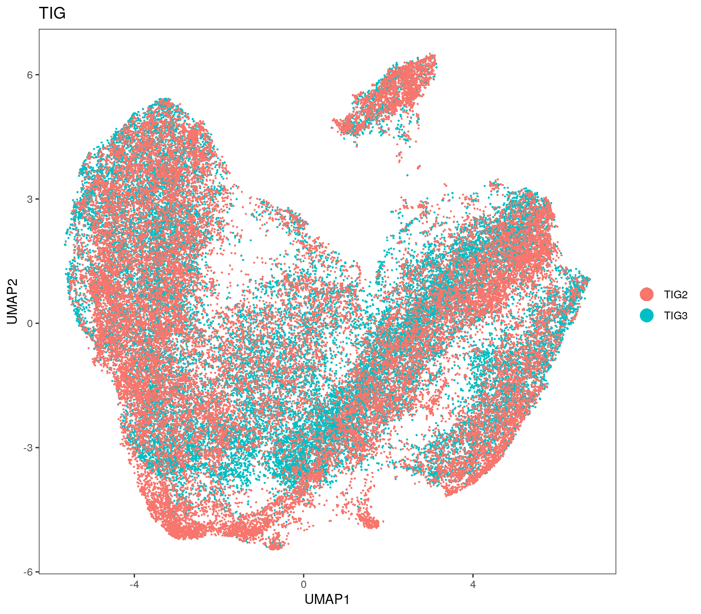
dittoDimPlot(sce_TNK, var = "TLS", reduction.use = "UMAP", size = 0.5,
color.panel = metadata(sce_TNK)$colour_vectors$TLS)
Visualize marker expression on UMAP
# Plot expression of all markers
p.list <- list()
for(i in markers_include_umap){
p.list[[i]] <- plotReducedDim(sce_TNK, colour_by = i, by_exprs_values = "scaled",
point_size = 0.5, point_alpha = 1, shape_by = "panel_type", dimred = "UMAP",) + scale_colour_gradient2(name = i, low = "#2166ac", mid = "white", high = "#b2182b", limits = c(-3, 3))
}
plot_grid(plotlist = p.list, ncol = 5)
| Version | Author | Date |
|---|---|---|
| ac03081 | SandraTietscher | 2020-10-28 |
Run graph-based clustering for TNK subset (Phenograph)
Display clusters on UMAP.
cluster_counts_TNK <- subset(assay(sce_TNK, "normalized"), rownames(assay(sce_TNK, "normalized")) %in% markers_include_umap)
g <- buildSNNGraph(cluster_counts_TNK, k=30)
clust <- igraph::cluster_louvain(g)$membership
table(clust)clust
1 2 3 4 5 6 7 8 9
7128 8793 7157 7733 3104 6502 6397 9998 2737 #add cluster information to sce object
sce_TNK$TNK_cluster <- as.factor(clust)
#plot on umap
dittoDimPlot(sce_TNK, var = "TNK_cluster", reduction.use = "UMAP", size = 0.2, do.label = TRUE, opacity = 0.8)
| Version | Author | Date |
|---|---|---|
| ac03081 | SandraTietscher | 2020-10-28 |
dittoDimPlot(sce_TNK, var = "TNK_cluster", reduction.use = "UMAP", size = 0.2, split.by = "TNK_cluster", opacity = 0.2)
| Version | Author | Date |
|---|---|---|
| ac03081 | SandraTietscher | 2020-10-28 |
Plot mean expression for each cluster
clustermean <- aggregateAcrossCells(sce_TNK, ids = DataFrame(cluster = sce_TNK$TNK_cluster), average = TRUE)
colnames(clustermean) <- clustermean$cluster
# Center and scale raw counts
assay(clustermean, "scaled") <- t(scale(t(assay(clustermean, "counts"))))
# Normalize raw counts
norm_counts <- t(apply(assay(clustermean, "counts"), 1, function(x)(x-min(x))/(max(x)-min(x))))
assay(clustermean, "normalized", withDimnames = FALSE) <- norm_counts
## Plot only relevant markers
include_plot <- markers_include_umap
## Plot
# Z-scaled
dittoHeatmap(clustermean[include_plot,], assay = "scaled", scale = "none",
heatmap.colors = magma(100),
cluster_cols = TRUE, show_colnames = TRUE,
breaks = seq(-3, 3, length.out = 101))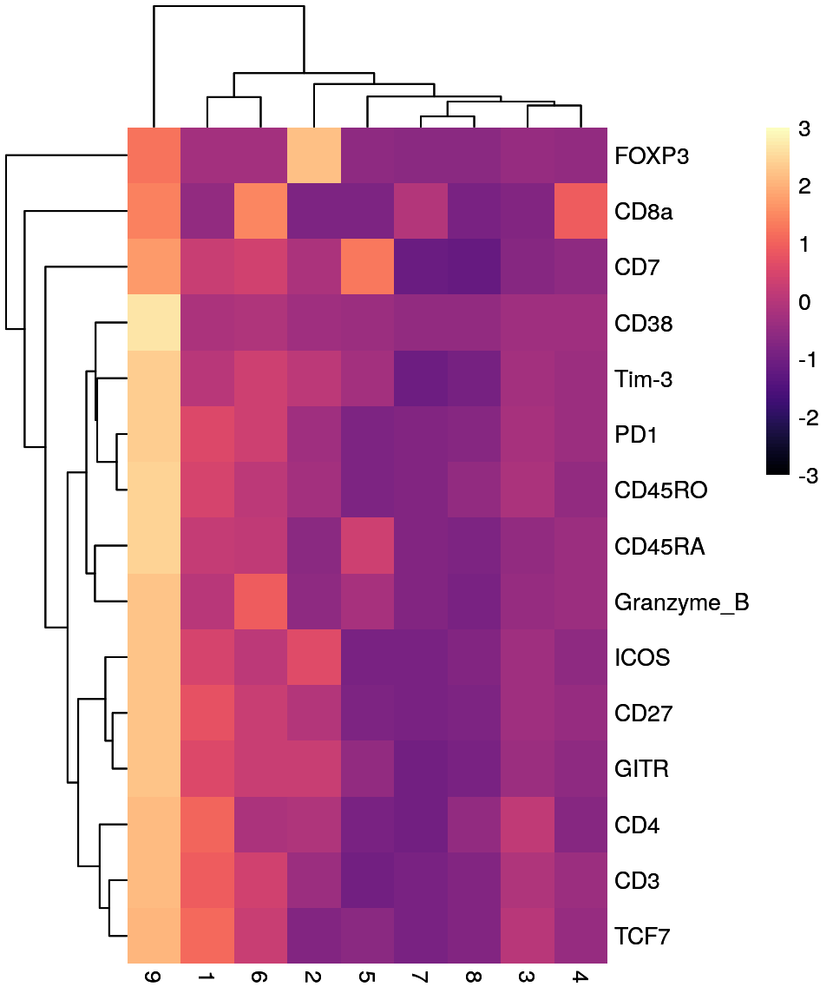
# Normalized (0-1)
dittoHeatmap(clustermean[include_plot,], assay = "normalized", scale = "none",
heatmap.colors = viridis(100),
cluster_cols = TRUE, show_colnames = TRUE)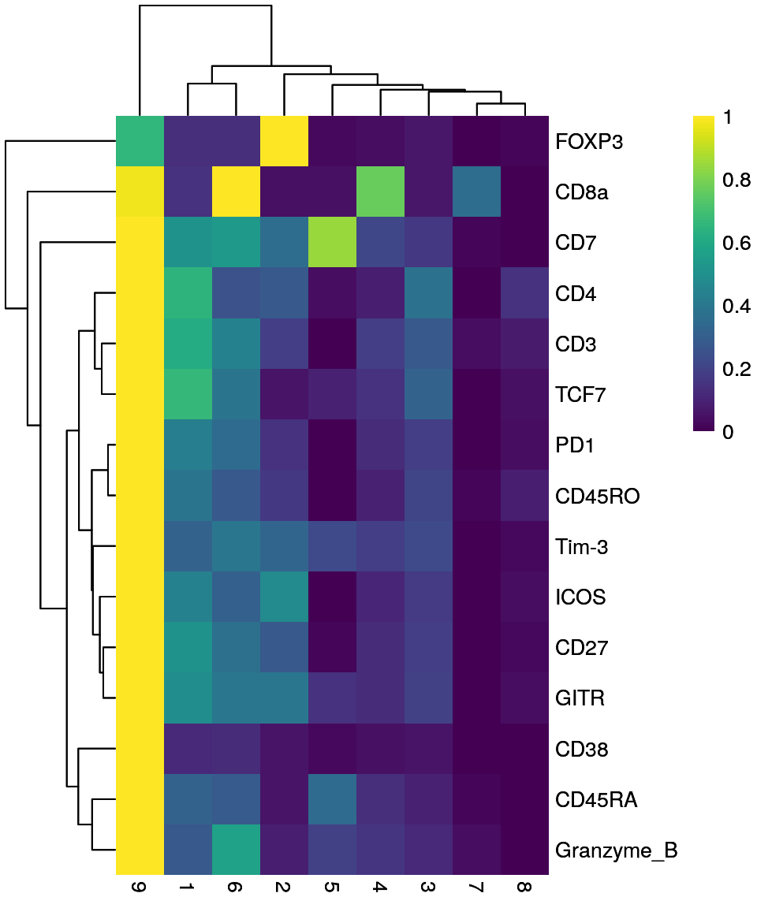
Plot cluster proportions by sample and sample proportions by cluster
props <- as.data.frame(prop.table(table(sce_TNK$TNK_cluster, sce_TNK$sample), margin = 1))
colnames(props) <- c("cluster", "sample", "proportion")
ggplot(props, aes(cluster, y = proportion, fill=sample)) +
geom_bar(stat="identity")+
theme(axis.title.x=element_blank(), axis.title.y = element_blank())+
theme(panel.background = element_blank(), axis.text.x = element_text(angle = 30))+
ggtitle("TNK sample proportions by cluster")
| Version | Author | Date |
|---|---|---|
| ac03081 | SandraTietscher | 2020-10-28 |
props <- as.data.frame(prop.table(table(sce_TNK$sample, sce_TNK$TNK_cluster), margin = 1))
colnames(props) <- c("cluster", "sample", "proportion")
ggplot(props, aes(cluster, y = proportion, fill=sample)) +
geom_bar(stat="identity")+
theme(axis.title.x=element_blank(), axis.title.y = element_blank())+
theme(panel.background = element_blank(), axis.text.x = element_text(angle = 30))+
ggtitle("TNK cluster proportions by sample")
| Version | Author | Date |
|---|---|---|
| ac03081 | SandraTietscher | 2020-10-28 |
Exclude cluster 9 and plot mean expression for each cluster
clustermean_wo7 <- clustermean[,-9]
# Center and scale raw counts
assay(clustermean_wo7, "scaled") <- t(scale(t(assay(clustermean_wo7, "counts"))))
# Normalize raw counts
norm_counts <- t(apply(assay(clustermean_wo7, "counts"), 1, function(x)(x-min(x))/(max(x)-min(x))))
assay(clustermean_wo7, "normalized", withDimnames = FALSE) <- norm_counts
## Plot
# Z-scaled
dittoHeatmap(clustermean_wo7[include_plot,], assay = "scaled", scale = "none",
heatmap.colors = magma(100),
cluster_cols = TRUE, show_colnames = TRUE,
breaks = seq(-3, 3, length.out = 101))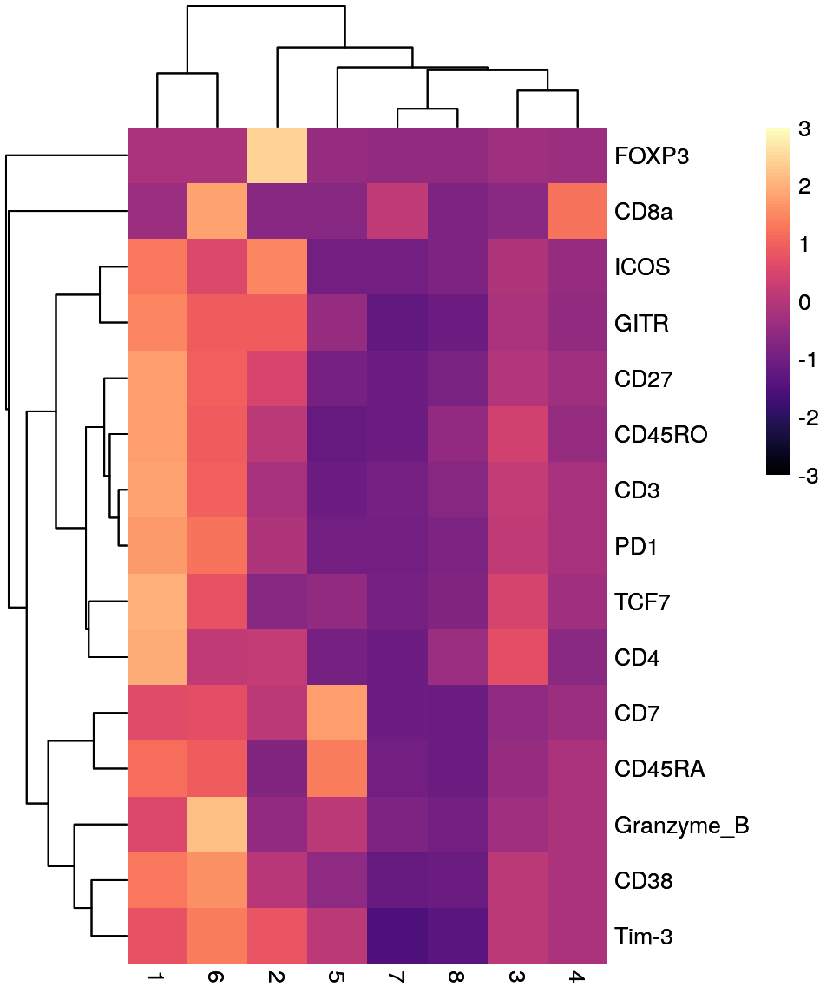
# Normalized (0-1)
dittoHeatmap(clustermean_wo7[include_plot,], assay = "normalized", scale = "none",
heatmap.colors = viridis(100),
cluster_cols = TRUE, show_colnames = TRUE)
Assign cell type labels
Manual cell type assignment based on canonical marker expression.
labels <- read.csv(paste0(getwd(), "/data/ProteinPanel_TNK_clusters.csv"))
label_list <- labels$class[match(sce_TNK$TNK_cluster, labels$cluster)]
sce_TNK$subtype <- label_list
# Plot on UMAP
dittoDimPlot(sce_TNK, var = "subtype", reduction.use = "UMAP", size = 0.5, opacity = 0.5, do.label = TRUE)
#Plot subtype proportions per sample
tab <- as.data.frame(prop.table(table(sce_TNK$sample, sce_TNK$subtype), margin = 1))
colnames(tab) <- c("sample", "subtype", "proportion")
ggplot(tab, aes(sample, y = proportion, fill=subtype)) +
geom_bar(stat="identity")+
theme(axis.title.x=element_blank(), axis.title.y = element_blank())+
theme(panel.background = element_blank(), axis.text.x = element_text(angle = 30))
Remove “T_AllHigh” cluster for further analysis
This cluster is present in only one sample and appears to be an artefact rather than a true cluster.
sce_TNK <- sce_TNK[,which(sce_TNK$subtype != "T_AllHigh")]Compare subtype proportions per TIG
Including TLS and pre-TLS.
tab <- as.data.frame(prop.table(table(sce_TNK$sample, sce_TNK$subtype), margin = 1))
colnames(tab) <- c("sample", "subtype", "proportion")
TIG2 <- c("TBB111", "TBB129", "TBB165", "TBB171", "TBB184", "TBB338")
tab$TIG <- ifelse(tab$sample %in% TIG2, "TIG2", "TIG3")
ggplot(tab, aes(x= TIG, y = proportion, color=TIG))+
geom_boxplot()+
geom_point()+
facet_wrap(~subtype, scales="free", ncol=6, strip.position="top")+
theme(axis.ticks.x = element_blank(),
axis.text.x=element_text(angle = 90, hjust=1),
axis.title.x = element_blank(),
panel.background = element_blank(),
panel.border = element_rect(color = "black", fill = NA, size = 1),
strip.background = element_blank(),
legend.background = element_blank())+
ylab("Of total [%]")+
stat_compare_means(method = "wilcox.test", aes(label=..p.format..))
| Version | Author | Date |
|---|---|---|
| ac03081 | SandraTietscher | 2020-10-28 |
Excluding TLS and pre-TLS.
sce_TNK_woTLS <- sce_TNK[,which(sce_TNK$TLS == "no")]
tab <- as.data.frame(prop.table(table(sce_TNK_woTLS$sample, sce_TNK_woTLS$subtype), margin = 1))
colnames(tab) <- c("sample", "subtype", "proportion")
TIG2 <- c("TBB111", "TBB129", "TBB165", "TBB171", "TBB184", "TBB338")
tab$TIG <- ifelse(tab$sample %in% TIG2, "TIG2", "TIG3")
ggplot(tab, aes(x= TIG, y = proportion, color=TIG))+
geom_boxplot()+
geom_point()+
facet_wrap(~subtype, scales="free", ncol=6, strip.position="top")+
theme(axis.ticks.x = element_blank(),
axis.text.x=element_text(angle = 90, hjust=1),
axis.title.x = element_blank(),
panel.background = element_blank(),
panel.border = element_rect(color = "black", fill = NA, size = 1),
strip.background = element_blank(),
legend.background = element_blank())+
ylab("Of total [%]")+
stat_compare_means(method = "wilcox.test", aes(label=..p.format..))
Percentage of CD8 that belongs to the PD1+ cluster
Excluding TLS and pre-TLS.
tab <- as.matrix(prop.table(table(sce_TNK_woTLS$sample, sce_TNK_woTLS$subtype), margin = 1))
CD8_PD1_perc <- as.data.frame(tab[,"CD8_PD1"]/(tab[,"CD8"]+tab[,"CD8_PD1"]))
colnames(CD8_PD1_perc) <- "CD8_PD1_perc"
CD8_PD1_perc$sample <- rownames(CD8_PD1_perc)
CD8_PD1_perc$TIG <- ifelse(CD8_PD1_perc$sample %in% TIG2, "TIG2", "TIG3")
ggplot(CD8_PD1_perc, aes(x= TIG, y = CD8_PD1_perc, color=TIG))+
geom_boxplot()+
geom_point()+
theme(axis.ticks.x = element_blank(),
axis.text.x=element_text(angle = 90, hjust=1),
axis.title.x = element_blank(),
panel.background = element_blank(),
panel.border = element_rect(color = "black", fill = NA, size = 1),
strip.background = element_blank(),
legend.background = element_blank())+
ylab("CD8_PD1 of total CD8+ [%]")+
stat_compare_means(method = "wilcox.test", aes(label=..p.format..))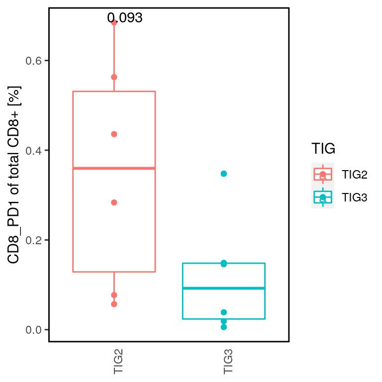
Comparison of TLS, pre-TLS and non-TLS.
tab <- as.matrix(prop.table(table(sce_TNK$ImageNumber, sce_TNK$subtype), margin = 1))
CD8_PD1_perc <- as.data.frame(tab[,"CD8_PD1"]/(tab[,"CD8"]+tab[,"CD8_PD1"]))
colnames(CD8_PD1_perc) <- "CD8_PD1_perc"
CD8_PD1_perc$ImageNumber <- rownames(CD8_PD1_perc)
# Retrieve TLS status for each image
img_TLS <- as.data.frame(table(sce_TNK$ImageNumber, sce_TNK$TLS))
colnames(img_TLS) <- c("ImageNumber", "TLS", "cellnumber_image")
img_TLS <- img_TLS %>% filter(cellnumber_image > 0)
img_TLS$cellnumber_image <- NULL
tab.comb <- merge(CD8_PD1_perc, img_TLS,by = "ImageNumber")
TLS_comparisons <- list( c("no", "pre"), c("no", "yes"), c("pre", "yes") )
ggplot(tab.comb, aes(x= TLS, y = CD8_PD1_perc))+
geom_boxplot()+
geom_point()+
theme(axis.text.x=element_text(angle = 90, hjust=1),
panel.background = element_blank(),
panel.border = element_rect(color = "black", fill = NA, size = 1),
strip.background = element_blank(),
legend.background = element_blank())+
ylab("CD8_PD1 of all CD8+ [%]")+
xlab("TLS classification of the ROI")+
stat_compare_means(method = "wilcox.test", aes(label=..p.format..), comparison = TLS_comparisons)
Percentage of CD4 that belongs to the PD1+ cluster
Excluding TLS and pre-TLS.
tab <- as.matrix(prop.table(table(sce_TNK_woTLS$sample, sce_TNK_woTLS$subtype), margin = 1))
CD4_PD1_perc <- as.data.frame(tab[,"CD4_PD1"]/(tab[,"CD4"]+tab[,"CD4_PD1"]))
colnames(CD4_PD1_perc) <- "CD4_PD1_perc"
CD4_PD1_perc$sample <- rownames(CD4_PD1_perc)
CD4_PD1_perc$TIG <- ifelse(CD4_PD1_perc$sample %in% TIG2, "TIG2", "TIG3")
ggplot(CD4_PD1_perc, aes(x= TIG, y = CD4_PD1_perc, color=TIG))+
geom_boxplot()+
geom_point()+
theme(axis.ticks.x = element_blank(),
axis.text.x=element_text(angle = 90, hjust=1),
axis.title.x = element_blank(),
panel.background = element_blank(),
panel.border = element_rect(color = "black", fill = NA, size = 1),
strip.background = element_blank(),
legend.background = element_blank())+
ylab("CD4_PD1 of all CD4+ [%]")+
stat_compare_means(method = "wilcox.test", aes(label=..p.format..))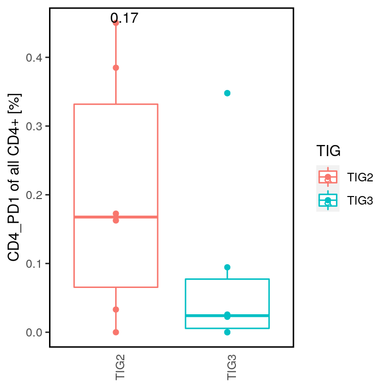
Comparison of TLS, pre-TLS and non-TLS.
tab <- as.matrix(prop.table(table(sce_TNK$ImageNumber, sce_TNK$subtype), margin = 1))
CD4_PD1_perc <- as.data.frame(tab[,"CD4_PD1"]/(tab[,"CD4"]+tab[,"CD4_PD1"]))
colnames(CD4_PD1_perc) <- "CD4_PD1_perc"
CD4_PD1_perc$ImageNumber <- rownames(CD4_PD1_perc)
# Retrieve TLS status for each image
img_TLS <- as.data.frame(table(sce_TNK$ImageNumber, sce_TNK$TLS))
colnames(img_TLS) <- c("ImageNumber", "TLS", "cellnumber_image")
img_TLS <- img_TLS %>% filter(cellnumber_image > 0)
img_TLS$cellnumber_image <- NULL
tab.comb <- merge(CD4_PD1_perc, img_TLS,by = "ImageNumber")
TLS_comparisons <- list( c("no", "pre"), c("no", "yes"), c("pre", "yes") )
ggplot(tab.comb, aes(x= TLS, y = CD4_PD1_perc))+
geom_boxplot()+
geom_point()+
theme(axis.text.x=element_text(angle = 90, hjust=1),
panel.background = element_blank(),
panel.border = element_rect(color = "black", fill = NA, size = 1),
strip.background = element_blank(),
legend.background = element_blank())+
ylab("CD4_PD1 of all CD4+ [%]")+
xlab("TLS classification of the ROI")+
stat_compare_means(method = "wilcox.test", aes(label=..p.format..), comparison = TLS_comparisons)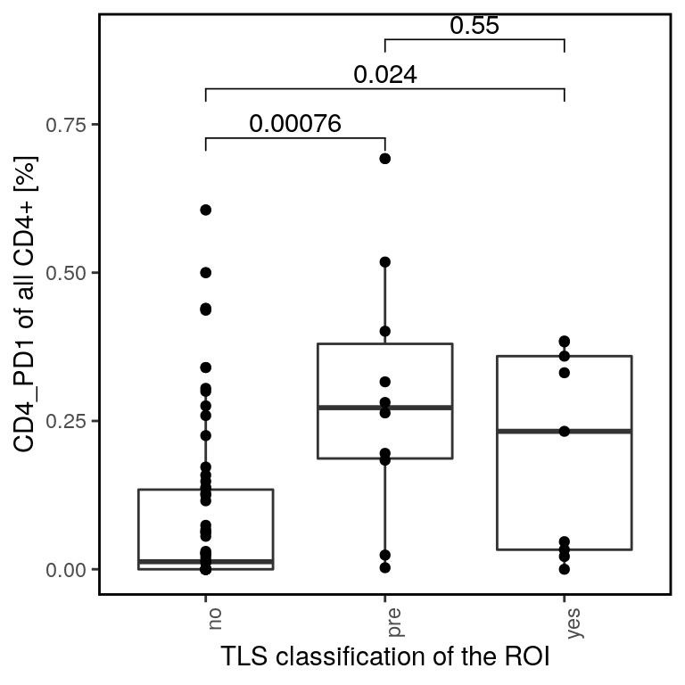
Within-sample variation
Excluding TLS and pre-TLS.
#Plot subtype proportions per sample
tab <- as.data.frame(prop.table(table(sce_TNK$ImageNumber, sce_TNK$subtype), margin = 1))
colnames(tab) <- c("ImageNumber", "subtype", "proportion")
ROI_info <- read.csv("data/ROI_info_HIER.csv")
colnames(ROI_info)[8] <- "ImageNumber"
tab.comb <- merge(tab, ROI_info, by = "ImageNumber")
tab.comb<- tab.comb %>% filter(TLS == "no")
## reorder patient levels
tab.comb$sample <- as.factor(tab.comb$sample)
old.levels <- levels(tab.comb$sample)
tab.comb$sample <- factor(tab.comb$sample, levels = old.levels[c(4:8, 12, 1:3, 9:11)])
ggplot(tab.comb, aes(ImageNumber, y = proportion, fill=subtype)) +
geom_bar(stat="identity")+
facet_wrap(~sample, scales="free_x", ncol = 6)+
theme(axis.title.x=element_blank(), axis.title.y = element_blank())+
theme(panel.background = element_blank(), axis.text.x = element_text(angle = 30))
| Version | Author | Date |
|---|---|---|
| ac03081 | SandraTietscher | 2020-10-28 |
tab <- as.matrix(prop.table(table(sce_TNK_woTLS$ImageNumber, sce_TNK_woTLS$subtype), margin = 1))
CD4_PD1_perc <- as.data.frame(tab[,"CD4_PD1"]/(tab[,"CD4"]+tab[,"CD4_PD1"]))
colnames(CD4_PD1_perc) <- "CD4_PD1_perc"
CD4_PD1_perc$ImageNumber <- rownames(CD4_PD1_perc)
CD4_PD1_perc <- CD4_PD1_perc[!is.na(CD4_PD1_perc$CD4_PD1_perc),]
tab.comb <- merge(CD4_PD1_perc, tab.comb, by = "ImageNumber")
ggplot(tab.comb, aes(ImageNumber, y = CD4_PD1_perc/6)) +
geom_bar(stat="identity", aes(fill = TIG))+
facet_wrap(~sample, scales="free_x", ncol = 6)+
theme(axis.title.x=element_blank(), axis.title.y = element_blank())+
theme(panel.background = element_blank(), axis.text.x = element_blank(),
axis.ticks.x = element_blank(), panel.border = element_rect(colour = "black", fill=NA, size=1))+
ylab("Proportion CD4_PD1 of all CD4+")+
ggtitle("CD4_PD1 proportion per ROI")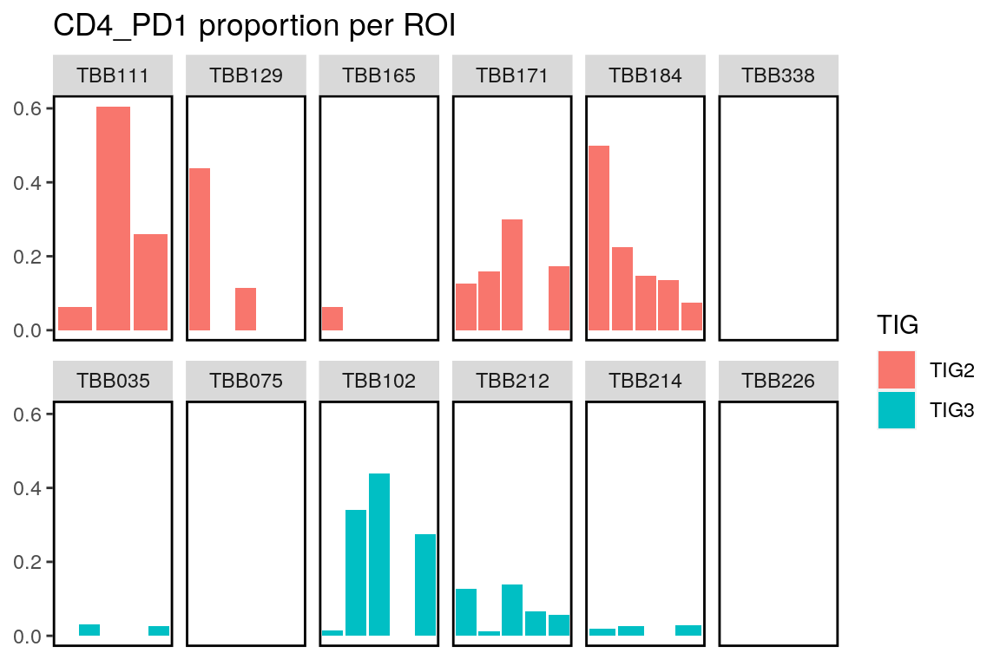
# Calculate coefficient of variation
cv_CD4PD1 <- tab.comb %>% filter(subtype == "CD4_PD1") %>% group_by(sample) %>% summarize(cv = (sd(CD4_PD1_perc)/mean(CD4_PD1_perc))*100)`summarise()` ungrouping output (override with `.groups` argument)# Mean CV including the samples with no CD4_PD1
cv_CD4PD1[is.na(cv_CD4PD1)] <- 0
meanCV_CD4PD1_incl <- mean(cv_CD4PD1$cv)
# Mean CV excluding the samples with no CD4_PD1
meanCV_CD4PD1_excl <- mean(cv_CD4PD1[cv_CD4PD1$cv != 0,]$cv)tab <- as.matrix(prop.table(table(sce_TNK_woTLS$ImageNumber, sce_TNK_woTLS$subtype), margin = 1))
CD8_PD1_perc <- as.data.frame(tab[,"CD8_PD1"]/(tab[,"CD8"]+tab[,"CD8_PD1"]))
colnames(CD8_PD1_perc) <- "CD8_PD1_perc"
CD8_PD1_perc$ImageNumber <- rownames(CD8_PD1_perc)
CD8_PD1_perc <- CD8_PD1_perc[!is.na(CD8_PD1_perc$CD8_PD1_perc),]
tab.comb <- merge(CD8_PD1_perc, tab.comb, by = "ImageNumber")
ggplot(tab.comb, aes(ImageNumber, y = CD8_PD1_perc/6)) +
geom_bar(stat="identity", aes(fill = TIG))+
facet_wrap(~sample, scales="free_x", ncol = 6)+
theme(axis.title.x=element_blank(), axis.title.y = element_blank())+
theme(panel.background = element_blank(), axis.text.x = element_blank(),
axis.ticks.x = element_blank(), panel.border = element_rect(colour = "black", fill=NA, size=1))+
ylab("Proportion CD8_PD1 of all CD8+")+
ggtitle("CD8_PD1 proportion per ROI")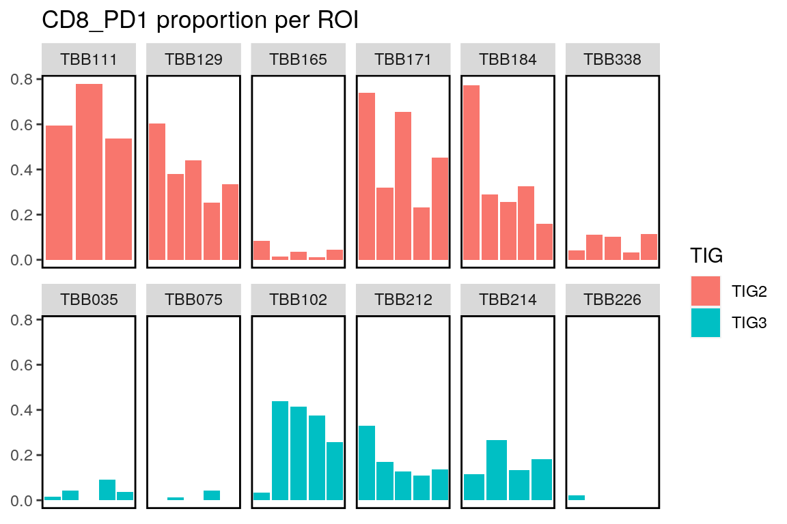
# Calculate coefficient of variation
cv_CD8PD1 <- tab.comb %>% filter(subtype == "CD8_PD1") %>% group_by(sample) %>% summarize(cv = (sd(CD8_PD1_perc)/mean(CD8_PD1_perc))*100)`summarise()` ungrouping output (override with `.groups` argument)meanCV_CD8PD1 <- mean(cv_CD8PD1$cv)Average marker expression TIG2 vs TIG3
Compare only CD8 T cells.
#Subset CD8 T cells
sce_CD8 <- sce_TNK[, which(sce_TNK$subtype %in% c("CD8", "CD8_PD1"))]
exprs <- data.frame(`Ki-67` = assay(sce_CD8, "exprs")["Ki-67",],
TCF7 = assay(sce_CD8, "exprs")["TCF7",],
Granzyme_B = assay(sce_CD8, "exprs")["Granzyme_B",],
`Tim-3` = assay(sce_CD8, "exprs")["Tim-3",],
GITR = assay(sce_CD8, "exprs")["GITR",],
CD38 = assay(sce_CD8, "exprs")["CD38",])
TNK_tab <- cbind(exprs, colData(sce_CD8))
TNK_tab <- pivot_longer(TNK_tab, 1:6, names_to = "marker", values_to = "exprs")
ggplot(TNK_tab, aes(x=TIG, y = exprs, fill = TIG))+
geom_violin(aes(fill=TIG))+
geom_boxplot(position=position_dodge(width=0.9), width=0.1, color="black", aes(fill=TIG))+
facet_wrap(~marker, scale = "free", ncol = 6)+
theme(axis.line.x = element_line(colour = "black", size = 0.25),
axis.line.y = element_line(colour = "black", size = 0.25),
panel.grid.major = element_blank(),
panel.grid.minor = element_blank(),
panel.border = element_blank(),
panel.background = element_blank(),
axis.title.x = element_blank())+
ylab("Marker expression (arcsin-transformed counts)")+
ggtitle("Single-cell violin plots")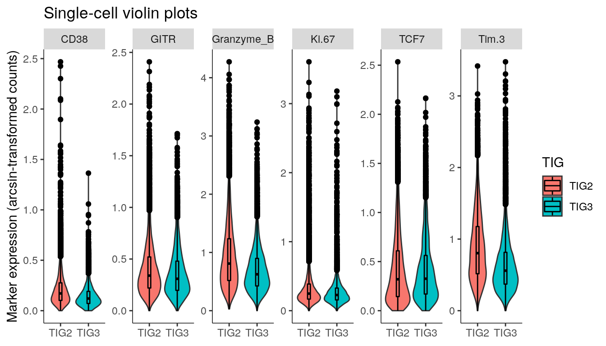
Comparison of patient means.
# Patient means
counts <- data.frame(`Ki-67` = assay(sce_CD8, "counts")["Ki-67",],
TCF7 = assay(sce_CD8, "counts")["TCF7",],
Granzyme_B = assay(sce_CD8, "counts")["Granzyme_B",],
`Tim-3` = assay(sce_CD8, "counts")["Tim-3",],
GITR = assay(sce_CD8, "counts")["GITR",],
CD38 = assay(sce_CD8, "counts")["CD38",])
TNK_tab_2 <- cbind(counts, colData(sce_CD8))
TNK_tab_2 <- pivot_longer(TNK_tab_2, 1:6, names_to = "marker", values_to = "counts")
sample_means <- data.frame(sample = levels(factor(TNK_tab_2$sample)))
for (i in colnames(counts)) {
TNK.i <- filter(TNK_tab_2, marker == i)
i.means <- TNK.i %>% group_by(sample) %>% dplyr::summarise(mean = mean(counts))
sample_means[,i] <- i.means$mean
}
sample_means$TIG <- c(rep("TIG2", 6), rep("TIG3", 6))
sample_means <- pivot_longer(sample_means, 2:7, names_to = "marker", values_to = "counts")
ggplot(sample_means, aes(TIG, counts, fill = TIG))+
geom_boxplot(aes(fill=TIG))+
geom_point(position=position_dodge(width=0.75), aes(group=TIG))+
facet_wrap(~marker, scales = "free", ncol = 6)+
stat_compare_means(method = "wilcox.test", aes(label=..p.format..), vjust = 1, label.x.npc = 0.5)+
theme(axis.line.x = element_line(colour = "black", size = 0.25),
axis.line.y = element_line(colour = "black", size = 0.25),
panel.grid.major = element_blank(),
panel.grid.minor = element_blank(),
panel.border = element_rect(colour = "black", fill=NA, size=1),
panel.background = element_blank(),
strip.background = element_blank())+
ggtitle("Patient means")
| Version | Author | Date |
|---|---|---|
| ac03081 | SandraTietscher | 2020-10-28 |
Proliferation status
Elevated Ki-67 expression in PD1+ T cells (both CD4 and CD8) confirms that these T cell subsets are highly proliferative.
sce_TNK.sub <- sce_TNK[,which(sce_TNK$subtype %in% c("CD4", "CD8", "CD4_PD1", "CD8_PD1"))]
dittoPlot(sce_TNK.sub, "Ki-67", group.by = "subtype",
plots = c("vlnplot"), assay = "scaled")+
#geom_hline(yintercept = 0.5, lty = "dashed")+
ylab("Scaled arcsinh-counts")+
theme(legend.position = "none")
Add subtypes to full SCE object and save
sce_protein <- readRDS(file = "output/ProteinPanel/sce_ProteinPanel_subtypes.rds")
TNK_ids <- colnames(sce_TNK)
sce_protein[,TNK_ids]$subtype <- sce_TNK$subtype
#Add subtype label also for cluster 9
sce_protein[,which(sce_protein$subtype == "T_NK")]$subtype <- "T_AllHigh"
saveRDS(sce_protein, "output/ProteinPanel/sce_ProteinPanel_subtypes_all.rds")Myeloid subsetting
Split myeloid cells up into CD11c-high and CD68-high subsets, based on the ratio between the two.
# sce_myeloid <- sce_protein[, which(sce_protein$celltype == "myeloid")]
#
# CD11c_counts <- subset(assay(sce_myeloid, "counts"), rownames(sce_myeloid) == "CD11c")
# CD68_counts <- subset(assay(sce_myeloid, "counts"), rownames(sce_myeloid) == "CD68")
# sce_myeloid$marker_ratio <- as.vector(CD68_counts/CD11c_counts)
# sce_myeloid$subtype <- ifelse(sce_myeloid$marker_ratio >= 1.7, "myeloid_CD68-high", "myeloid_CD11c-high")
#
# dittoScatterPlot(sce_myeloid, "CD11c", "CD68", opacity = 0.2, color.var = "subtype")
#
# #Add subtype information to full object
# myeloid_ids <- colnames(sce_myeloid)
# sce_protein[,myeloid_ids]$subtype <- sce_myeloid$subtype
# #
# # saveRDS(sce_protein, "output/ProteinPanel/sce_ProteinPanel_subtypes_all.rds")Basic subtype-based analysis
Marker expression heatmap for all cell subtypes
sce_protein_woTAllHigh <- sce_protein[,which(sce_protein$subtype != "T_AllHigh")]
# Mean marker expression heatmap for all subtypes
subtypemean <- aggregateAcrossCells(sce_protein_woTAllHigh, ids = DataFrame(subtype = sce_protein_woTAllHigh$subtype), average = TRUE)
colnames(subtypemean) <- subtypemean$subtype
# Center and scale raw counts
assay(subtypemean, "scaled") <- t(scale(t(assay(subtypemean, "counts"))))
# Normalize raw counts
norm_counts <- t(apply(assay(subtypemean, "counts"), 1, function(x)(x-min(x))/(max(x)-min(x))))
assay(subtypemean, "normalized", withDimnames = FALSE) <- norm_counts
## Plot
# Z-scaled
dittoHeatmap(subtypemean, assay = "scaled", scale = "none",
heatmap.colors = magma(100),
cluster_cols = TRUE, show_colnames = TRUE,
breaks = seq(-3, 3, length.out = 101))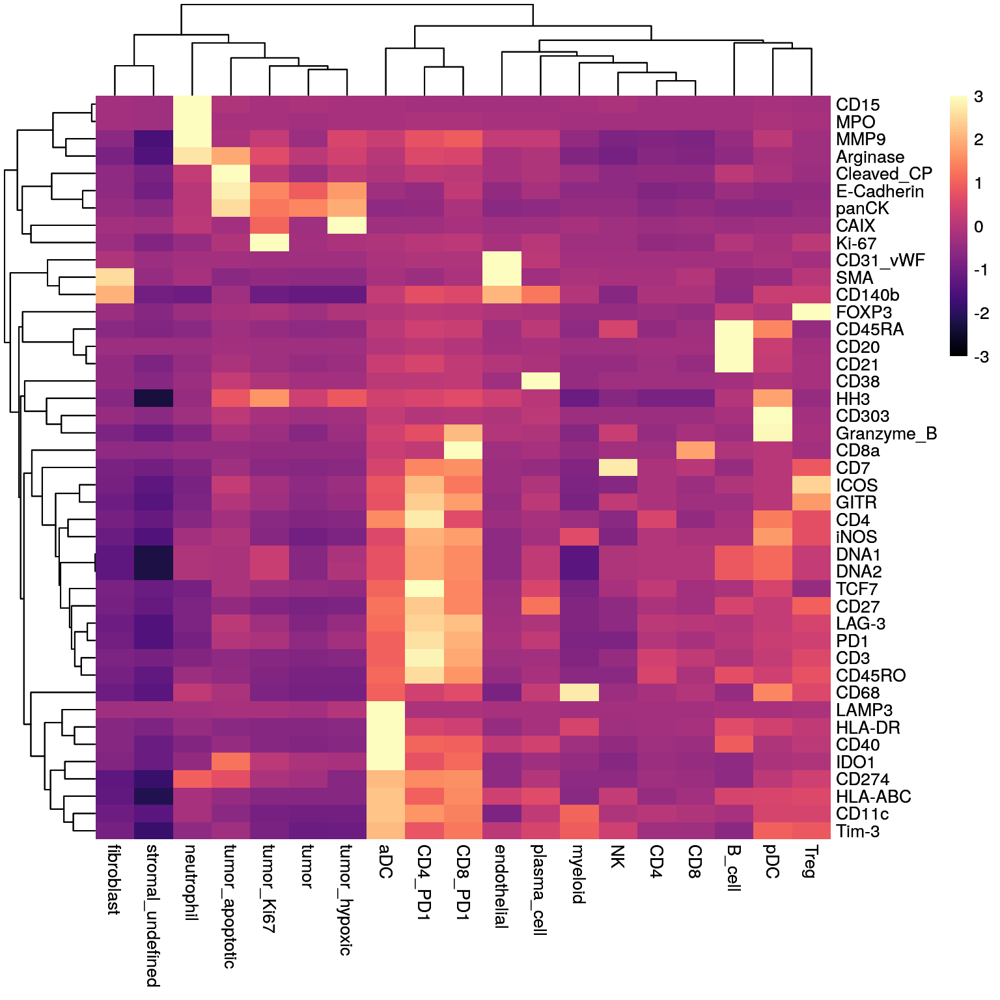
# Normalized (0-1)
dittoHeatmap(subtypemean, assay = "normalized", scale = "none",
heatmap.colors = viridis(100),
cluster_cols = TRUE, show_colnames = TRUE)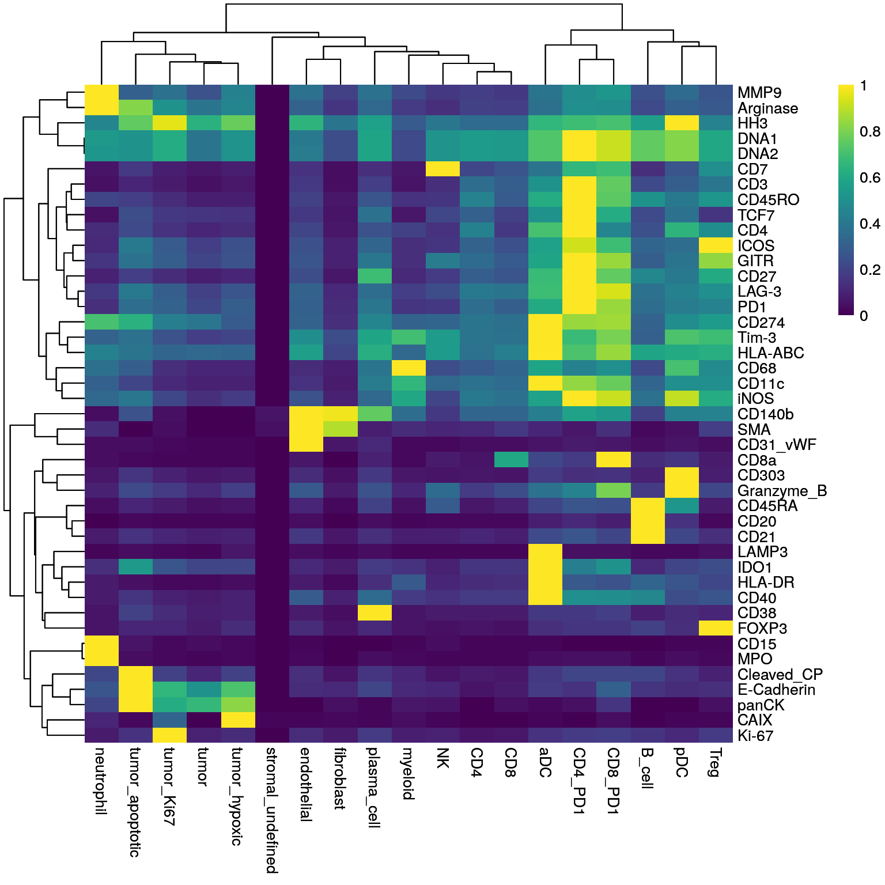
Violinplots of marker expression
dittoPlot(sce_protein, "CD11c", group.by = "subtype", plots = "vlnplot", assay = "scaled", vlnplot.width = 1.5)
dittoPlot(sce_protein, "IDO1", group.by = "celltype", plots = "vlnplot", assay = "scaled", vlnplot.width = 1.5)
| Version | Author | Date |
|---|---|---|
| 07fbe33 | SandraTietscher | 2020-11-06 |
dittoPlot(sce_protein, "CD274", group.by = "celltype", plots = "vlnplot", assay = "scaled", vlnplot.width = 1.5)
| Version | Author | Date |
|---|---|---|
| 07fbe33 | SandraTietscher | 2020-11-06 |
TLS preference of celltypes
# Plot as simple timeline
tab <- as.data.frame(prop.table(table(sce_protein$TLS, sce_protein$subtype), margin = 1))
colnames(tab) <- c("TLS", "subtype", "proportion")
tab$TLS <- as.factor(tab$TLS)
ggplot(tab, aes(TLS, proportion, group = 1))+
geom_line()+
geom_point()+
facet_wrap(~subtype, scales = "fixed")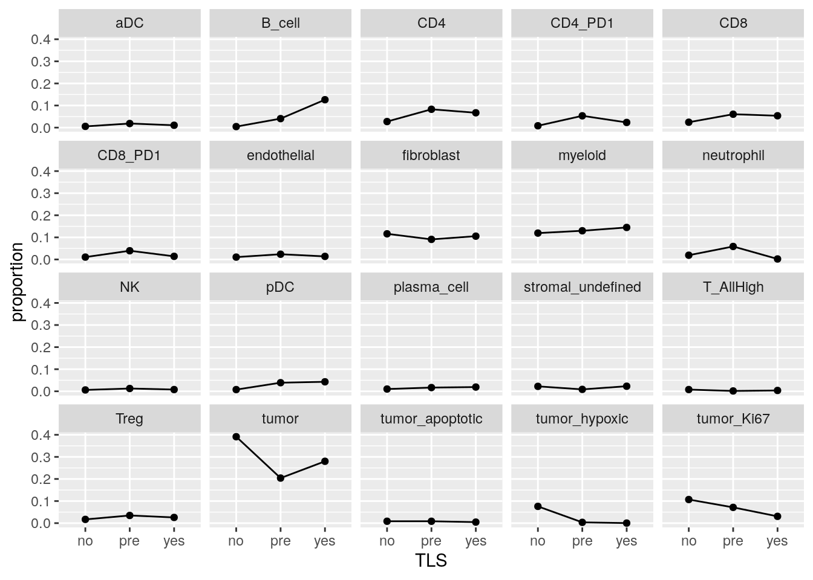
# Boxplots (individual ROIs as points): subtype proportions
tab2 <- as.data.frame(prop.table(table(sce_protein$ImageNumber, sce_protein$subtype), margin = 1))
colnames(tab2) <- c("ImageNumber", "subtype", "proportion")
tab3 <- as.data.frame(table(sce_protein$ImageNumber, sce_protein$TLS))
colnames(tab3) <- c("ImageNumber", "TLS", "cellnumber")
tab3 <- tab3 %>% filter(cellnumber > 0)
tab.comb <- merge(tab2, tab3, by = "ImageNumber")
my_comparisons <- list( c("no", "pre"), c("no", "yes"), c("pre", "yes") )
ggplot(tab.comb, aes(TLS, proportion))+
geom_boxplot()+
geom_point()+
facet_wrap(~subtype, scales = "free")+
theme(axis.ticks.x = element_blank(),
axis.text.x=element_text(angle = 90, hjust=1),
axis.title.x = element_blank(),
panel.background = element_blank(),
panel.border = element_rect(color = "black", fill = NA, size = 1),
strip.background = element_blank(),
legend.background = element_blank())+
ylab("Of all stromal [%]")+
stat_compare_means(comparisons = my_comparisons, method = "wilcox.test", aes(label=..p.signif..))
# Boxplots (individual ROIs as points): total celltype number
tab2 <- as.data.frame(table(sce_protein$ImageNumber, sce_protein$subtype), margin = 1)
colnames(tab2) <- c("ImageNumber", "subtype", "cellnumber")
tab3 <- as.data.frame(table(sce_protein$ImageNumber, sce_protein$TLS))
colnames(tab3) <- c("ImageNumber", "TLS", "cellnumber_image")
tab3 <- tab3 %>% filter(cellnumber_image > 0)
tab.comb <- merge(tab2, tab3, by = "ImageNumber")
ggplot(tab.comb, aes(TLS, cellnumber))+
geom_boxplot()+
geom_point()+
stat_compare_means(comparisons = my_comparisons, label = "p.signif")+
facet_wrap(~subtype, scales = "free")+
theme(axis.ticks.x = element_blank(),
axis.text.x=element_text(angle = 90, hjust=1),
axis.title.x = element_blank(),
panel.background = element_blank(),
panel.border = element_rect(color = "black", fill = NA, size = 1),
strip.background = element_blank(),
legend.background = element_blank())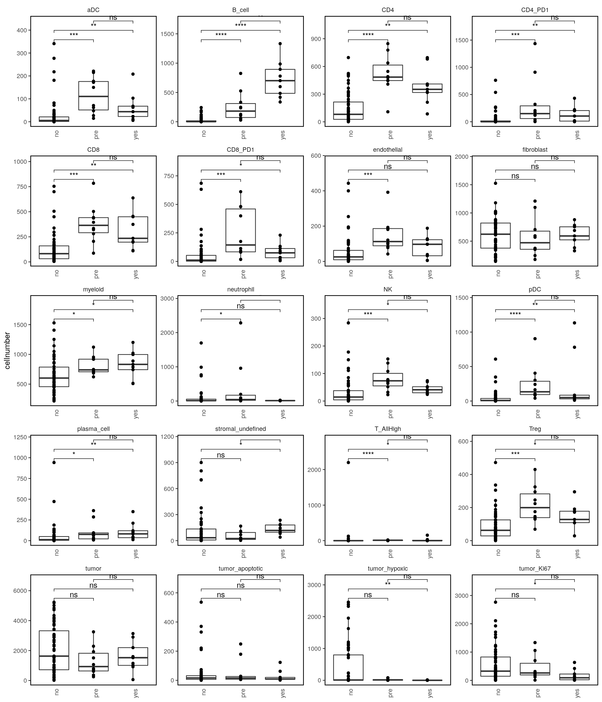
TIG comparison of subtype frequency
Excluding TLS and pre-TLS.
sce_protein_woTLS <- sce_protein[,which(sce_protein$TLS == "no")]
tab <- as.data.frame(prop.table(table(sce_protein_woTLS$sample, sce_protein_woTLS$subtype), margin = 1))
colnames(tab) <- c("sample", "subtype", "proportion")
TIG2 <- c("TBB111", "TBB129", "TBB165", "TBB171", "TBB184", "TBB338")
tab$TIG <- ifelse(tab$sample %in% TIG2, "TIG2", "TIG3")
ggplot(tab, aes(x= TIG, y = proportion, color=TIG))+
geom_boxplot()+
geom_point()+
facet_wrap(~subtype, scales="free", ncol=7, strip.position="top")+
theme(axis.ticks.x = element_blank(),
axis.text.x=element_text(angle = 90, hjust=1),
axis.title.x = element_blank(),
panel.background = element_blank(),
panel.border = element_rect(color = "black", fill = NA, size = 1),
strip.background = element_blank(),
legend.background = element_blank())+
ylab("Of total [%]")+
stat_compare_means(method = "wilcox.test", aes(label=..p.format..))
Within sample variation of main celltypes
Excluding TLS and pre-TLS.
Use CV (coefficient of variation) and PV (proportional variability). PV is less susceptible to large outliers, and handles zeros better.
#Plot subtype proportions per sample
tab <- as.data.frame(prop.table(table(sce_protein$ImageNumber, sce_protein$celltype), margin = 1))
colnames(tab) <- c("ImageNumber", "celltype", "proportion")
tab.comb <- merge(tab, ROI_info, by = "ImageNumber")
tab.comb<- tab.comb %>% filter(TLS == "no")
## reorder patient levels
tab.comb$sample <- as.factor(tab.comb$sample)
old.levels <- levels(tab.comb$sample)
tab.comb$sample <- factor(tab.comb$sample, levels = old.levels[c(4:8, 12, 1:3, 9:11)])
p.list <- list()
for (i in unique(sce_protein$celltype)) {
tab.i <- tab.comb %>% filter(celltype == i)
p.list[[i]]<- ggplot(tab.i, aes(ImageNumber, y = proportion, fill=TIG)) +
geom_bar(stat="identity")+
facet_wrap(~sample, scales="free_x", ncol = 12)+
theme(axis.title.x=element_blank(), axis.title.y = element_blank())+
theme(panel.background = element_blank(), axis.text.x = element_text(angle = 30))+
ggtitle(i)
}
plot_grid(plotlist = p.list, ncol = 1)
| Version | Author | Date |
|---|---|---|
| a1d147b | SandraTietscher | 2020-11-02 |
# Calculate mean CVs
cvs <- data.frame(mean_cv = numeric())
for (i in unique(sce_protein$celltype)) {
cv_i <- tab.comb %>% filter(celltype == i) %>% group_by(sample) %>% summarize(cv = (sd(proportion)/mean(proportion))*100)
meanCV_i<- mean(cv_i$cv, na.rm = TRUE)
cvs[i,] <- meanCV_i
}`summarise()` ungrouping output (override with `.groups` argument)
`summarise()` ungrouping output (override with `.groups` argument)
`summarise()` ungrouping output (override with `.groups` argument)
`summarise()` ungrouping output (override with `.groups` argument)
`summarise()` ungrouping output (override with `.groups` argument)
`summarise()` ungrouping output (override with `.groups` argument)
`summarise()` ungrouping output (override with `.groups` argument)
`summarise()` ungrouping output (override with `.groups` argument)
`summarise()` ungrouping output (override with `.groups` argument)
`summarise()` ungrouping output (override with `.groups` argument)
`summarise()` ungrouping output (override with `.groups` argument)# Sort by mean CV and plot
cvs$celltype <- as.character(rownames(cvs))
ggplot(cvs[order(cvs$mean_cv),], aes(reorder(celltype, mean_cv), y = mean_cv)) +
geom_bar(stat="identity")+
theme(axis.text.x = element_text(angle = 90, hjust = 1), axis.title.x = element_blank(),
panel.background = element_blank())+
ggtitle("Mean CV of cell type proportions\n(across ROIs of the same sample)")
| Version | Author | Date |
|---|---|---|
| b1f8649 | SandraTietscher | 2020-11-18 |
# Calculate mean PV (Proportional Variability)
pv <- data.frame(mean_pv = numeric())
for (i in unique(sce_protein$celltype)) {
pv_i <- tab.comb %>% filter(celltype == i) %>% group_by(sample) %>% summarize(pv = PV(proportion))
meanPV_i<- mean(pv_i$pv, na.rm = TRUE)
pv[i,] <- meanPV_i
}`summarise()` ungrouping output (override with `.groups` argument)
`summarise()` ungrouping output (override with `.groups` argument)
`summarise()` ungrouping output (override with `.groups` argument)
`summarise()` ungrouping output (override with `.groups` argument)
`summarise()` ungrouping output (override with `.groups` argument)
`summarise()` ungrouping output (override with `.groups` argument)
`summarise()` ungrouping output (override with `.groups` argument)
`summarise()` ungrouping output (override with `.groups` argument)
`summarise()` ungrouping output (override with `.groups` argument)
`summarise()` ungrouping output (override with `.groups` argument)
`summarise()` ungrouping output (override with `.groups` argument)# Sort by mean PV and plot
pv$celltype <- as.character(rownames(pv))
ggplot(pv[order(pv$mean_pv),], aes(reorder(celltype, mean_pv), y = mean_pv)) +
geom_bar(stat="identity")+
theme(axis.text.x = element_text(angle = 90, hjust = 1), axis.title.x = element_blank(),
panel.background = element_blank())+
ggtitle("Mean PV of cell type proportions\n(across ROIs of the same sample)")
| Version | Author | Date |
|---|---|---|
| b1f8649 | SandraTietscher | 2020-11-18 |
For tumor subtypes only.
sce_tumor <- sce_protein[,which(sce_protein$celltype == "tumor")]
tab <- as.data.frame(prop.table(table(sce_tumor$ImageNumber, sce_tumor$subtype), margin = 1))
colnames(tab) <- c("ImageNumber", "subtype", "proportion")
tab.comb <- merge(tab, ROI_info, by = "ImageNumber")
tab.comb<- tab.comb %>% filter(TLS == "no")
## reorder patient levels
tab.comb$sample <- as.factor(tab.comb$sample)
old.levels <- levels(tab.comb$sample)
tab.comb$sample <- factor(tab.comb$sample, levels = old.levels[c(4:8, 12, 1:3, 9:11)])
p.list <- list()
for (i in unique(sce_tumor$subtype)) {
tab.i <- tab.comb %>% filter(subtype == i)
p.list[[i]]<- ggplot(tab.i, aes(ImageNumber, y = proportion, fill=TIG)) +
geom_bar(stat="identity")+
facet_wrap(~sample, scales="free_x", ncol = 12)+
theme(axis.title.x=element_blank(), axis.title.y = element_blank())+
theme(panel.background = element_blank(), axis.text.x = element_text(angle = 30))+
ggtitle(i)
}
plot_grid(plotlist = p.list, ncol = 1)
| Version | Author | Date |
|---|---|---|
| a1d147b | SandraTietscher | 2020-11-02 |
# Calculate mean CVs
cvs <- data.frame(mean_cv = numeric())
for (i in unique(sce_tumor$subtype)) {
cv_i <- tab.comb %>% filter(subtype == i) %>% group_by(sample) %>% summarize(cv = (sd(proportion)/mean(proportion))*100)
meanCV_i<- mean(cv_i$cv)
cvs[i,] <- meanCV_i
}`summarise()` ungrouping output (override with `.groups` argument)
`summarise()` ungrouping output (override with `.groups` argument)
`summarise()` ungrouping output (override with `.groups` argument)
`summarise()` ungrouping output (override with `.groups` argument)# Calculate mean PV (Proportional Variability)
pv <- data.frame(mean_pv = numeric())
for (i in unique(sce_tumor$subtype)) {
pv_i <- tab.comb %>% filter(subtype == i) %>% group_by(sample) %>% summarize(pv = PV(proportion))
meanPV_i<- mean(pv_i$pv, na.rm = TRUE)
pv[i,] <- meanPV_i
}`summarise()` ungrouping output (override with `.groups` argument)
`summarise()` ungrouping output (override with `.groups` argument)
`summarise()` ungrouping output (override with `.groups` argument)
`summarise()` ungrouping output (override with `.groups` argument)# Sort by mean CV and plot
cvs$subtype <- as.character(rownames(cvs))
ggplot(cvs[order(cvs$mean_cv),], aes(reorder(subtype, mean_cv), y = mean_cv)) +
geom_bar(stat="identity")+
theme(axis.text.x = element_text(angle = 90, hjust = 1), axis.title.x = element_blank(),
panel.background = element_blank())+
ggtitle("Mean CV of cell type proportions\n(across ROIs of the same sample)")
| Version | Author | Date |
|---|---|---|
| ea57348 | SandraTietscher | 2020-11-05 |
# Sort by mean PV and plot
pv$subtype <- as.character(rownames(pv))
ggplot(pv[order(pv$mean_pv),], aes(reorder(subtype, mean_pv), y = mean_pv)) +
geom_bar(stat="identity")+
theme(axis.text.x = element_text(angle = 90, hjust = 1), axis.title.x = element_blank(),
panel.background = element_blank())+
ggtitle("Mean PV of cell type proportions\n(across ROIs of the same sample)")
| Version | Author | Date |
|---|---|---|
| b1f8649 | SandraTietscher | 2020-11-18 |
For T/NK subtypes only.
sce_TNK <- sce_protein[,which(sce_protein$celltype == "T_NK")]
tab <- as.data.frame(prop.table(table(sce_TNK$ImageNumber, sce_TNK$subtype), margin = 1))
colnames(tab) <- c("ImageNumber", "subtype", "proportion")
tab.comb <- merge(tab, ROI_info, by = "ImageNumber")
tab.comb<- tab.comb %>% filter(TLS == "no")
## reorder patient levels
tab.comb$sample <- as.factor(tab.comb$sample)
old.levels <- levels(tab.comb$sample)
tab.comb$sample <- factor(tab.comb$sample, levels = old.levels[c(4:8, 12, 1:3, 9:11)])
p.list <- list()
for (i in unique(sce_TNK$subtype)) {
tab.i <- tab.comb %>% filter(subtype == i)
p.list[[i]]<- ggplot(tab.i, aes(ImageNumber, y = proportion, fill=TIG)) +
geom_bar(stat="identity")+
facet_wrap(~sample, scales="free_x", ncol = 12)+
theme(axis.title.x=element_blank(), axis.title.y = element_blank())+
theme(panel.background = element_blank(), axis.text.x = element_text(angle = 30))+
ggtitle(i)
}
plot_grid(plotlist = p.list, ncol = 1)
| Version | Author | Date |
|---|---|---|
| b1f8649 | SandraTietscher | 2020-11-18 |
# Calculate mean CVs
cvs <- data.frame(mean_cv = numeric())
for (i in unique(sce_TNK$subtype)) {
cv_i <- tab.comb %>% filter(subtype == i) %>% group_by(sample) %>% summarize(cv = (sd(proportion)/mean(proportion))*100)
meanCV_i<- mean(cv_i$cv, na.rm = TRUE)
cvs[i,] <- meanCV_i
}`summarise()` ungrouping output (override with `.groups` argument)
`summarise()` ungrouping output (override with `.groups` argument)
`summarise()` ungrouping output (override with `.groups` argument)
`summarise()` ungrouping output (override with `.groups` argument)
`summarise()` ungrouping output (override with `.groups` argument)
`summarise()` ungrouping output (override with `.groups` argument)
`summarise()` ungrouping output (override with `.groups` argument)# Calculate mean PV (Proportional Variability)
pv <- data.frame(mean_pv = numeric())
for (i in unique(sce_TNK$subtype)) {
pv_i <- tab.comb %>% filter(subtype == i) %>% group_by(sample) %>% summarize(pv = PV(proportion))
meanPV_i<- mean(pv_i$pv, na.rm = TRUE)
pv[i,] <- meanPV_i
}`summarise()` ungrouping output (override with `.groups` argument)
`summarise()` ungrouping output (override with `.groups` argument)
`summarise()` ungrouping output (override with `.groups` argument)
`summarise()` ungrouping output (override with `.groups` argument)
`summarise()` ungrouping output (override with `.groups` argument)
`summarise()` ungrouping output (override with `.groups` argument)
`summarise()` ungrouping output (override with `.groups` argument)# Sort by mean CV and plot
cvs$subtype <- as.character(rownames(cvs))
ggplot(cvs[order(cvs$mean_cv),], aes(reorder(subtype, mean_cv), y = mean_cv)) +
geom_bar(stat="identity")+
theme(axis.text.x = element_text(angle = 90, hjust = 1), axis.title.x = element_blank(),
panel.background = element_blank())+
ggtitle("Mean CV of cell type proportions\n(across ROIs of the same sample)")
| Version | Author | Date |
|---|---|---|
| b1f8649 | SandraTietscher | 2020-11-18 |
# Sort by mean PV and plot
pv$subtype <- as.character(rownames(pv))
ggplot(pv[order(pv$mean_pv),], aes(reorder(subtype, mean_pv), y = mean_pv)) +
geom_bar(stat="identity")+
theme(axis.text.x = element_text(angle = 90, hjust = 1), axis.title.x = element_blank(),
panel.background = element_blank())+
ggtitle("Mean PV of cell type proportions\n(across ROIs of the same sample)")
| Version | Author | Date |
|---|---|---|
| b1f8649 | SandraTietscher | 2020-11-18 |
sessionInfo()R version 4.0.2 (2020-06-22)
Platform: x86_64-pc-linux-gnu (64-bit)
Running under: Ubuntu 20.04 LTS
Matrix products: default
BLAS/LAPACK: /usr/lib/x86_64-linux-gnu/openblas-openmp/libopenblasp-r0.3.8.so
locale:
[1] LC_CTYPE=en_US.UTF-8 LC_NUMERIC=C
[3] LC_TIME=en_US.UTF-8 LC_COLLATE=en_US.UTF-8
[5] LC_MONETARY=en_US.UTF-8 LC_MESSAGES=C
[7] LC_PAPER=en_US.UTF-8 LC_NAME=C
[9] LC_ADDRESS=C LC_TELEPHONE=C
[11] LC_MEASUREMENT=en_US.UTF-8 LC_IDENTIFICATION=C
attached base packages:
[1] parallel stats4 stats graphics grDevices utils datasets
[8] methods base
other attached packages:
[1] CValternatives_0.1.0 scran_1.16.0
[3] ggpubr_0.4.0 cowplot_1.0.0
[5] viridis_0.5.1 viridisLite_0.3.0
[7] dittoSeq_1.0.2 forcats_0.5.0
[9] stringr_1.4.0 dplyr_1.0.1
[11] purrr_0.3.4 readr_1.3.1
[13] tidyr_1.1.1 tibble_3.0.3
[15] tidyverse_1.3.0 scater_1.16.2
[17] SingleCellExperiment_1.10.1 SummarizedExperiment_1.18.2
[19] DelayedArray_0.14.1 matrixStats_0.56.0
[21] Biobase_2.48.0 GenomicRanges_1.40.0
[23] GenomeInfoDb_1.24.2 IRanges_2.22.2
[25] S4Vectors_0.26.1 BiocGenerics_0.34.0
[27] ggplot2_3.3.2 workflowr_1.6.2
loaded via a namespace (and not attached):
[1] ggbeeswarm_0.6.0 colorspace_1.4-1
[3] ggsignif_0.6.0 rio_0.5.16
[5] ellipsis_0.3.1 ggridges_0.5.2
[7] rprojroot_1.3-2 XVector_0.28.0
[9] BiocNeighbors_1.6.0 fs_1.5.0
[11] rstudioapi_0.11 farver_2.0.3
[13] ggrepel_0.8.2 RSpectra_0.16-0
[15] fansi_0.4.1 lubridate_1.7.9
[17] xml2_1.3.2 codetools_0.2-16
[19] knitr_1.29 jsonlite_1.7.0
[21] broom_0.7.0 dbplyr_1.4.4
[23] uwot_0.1.8 pheatmap_1.0.12
[25] compiler_4.0.2 httr_1.4.2
[27] dqrng_0.2.1 backports_1.1.8
[29] assertthat_0.2.1 Matrix_1.2-18
[31] limma_3.44.3 cli_2.0.2
[33] later_1.1.0.1 BiocSingular_1.4.0
[35] htmltools_0.5.0 tools_4.0.2
[37] igraph_1.2.5 rsvd_1.0.3
[39] gtable_0.3.0 glue_1.4.1
[41] GenomeInfoDbData_1.2.3 Rcpp_1.0.5
[43] carData_3.0-4 cellranger_1.1.0
[45] vctrs_0.3.2 DelayedMatrixStats_1.10.1
[47] xfun_0.16 openxlsx_4.1.5
[49] rvest_0.3.6 lifecycle_0.2.0
[51] irlba_2.3.3 statmod_1.4.34
[53] rstatix_0.6.0 edgeR_3.30.3
[55] zlibbioc_1.34.0 scales_1.1.1
[57] hms_0.5.3 promises_1.1.1
[59] RColorBrewer_1.1-2 curl_4.3
[61] yaml_2.2.1 gridExtra_2.3
[63] stringi_1.4.6 zip_2.0.4
[65] BiocParallel_1.22.0 rlang_0.4.7
[67] pkgconfig_2.0.3 bitops_1.0-6
[69] evaluate_0.14 lattice_0.20-41
[71] labeling_0.3 tidyselect_1.1.0
[73] RcppAnnoy_0.0.16 plyr_1.8.6
[75] magrittr_1.5 R6_2.4.1
[77] generics_0.0.2 DBI_1.1.0
[79] foreign_0.8-80 pillar_1.4.6
[81] haven_2.3.1 whisker_0.4
[83] withr_2.2.0 abind_1.4-5
[85] RCurl_1.98-1.2 car_3.0-8
[87] modelr_0.1.8 crayon_1.3.4
[89] rmarkdown_2.3 locfit_1.5-9.4
[91] grid_4.0.2 readxl_1.3.1
[93] data.table_1.13.0 blob_1.2.1
[95] git2r_0.27.1 reprex_0.3.0
[97] digest_0.6.25 httpuv_1.5.4
[99] munsell_0.5.0 beeswarm_0.2.3
[101] vipor_0.4.5